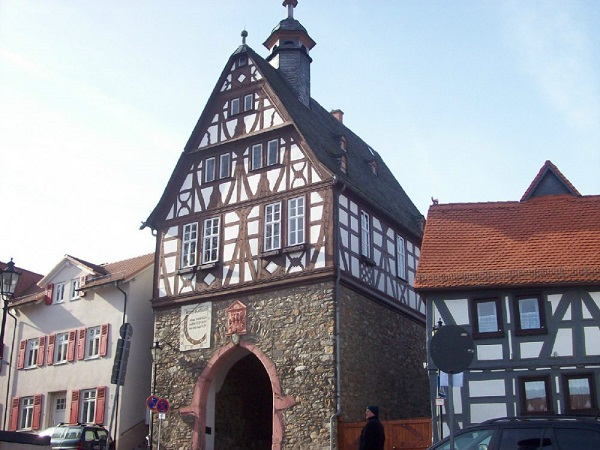
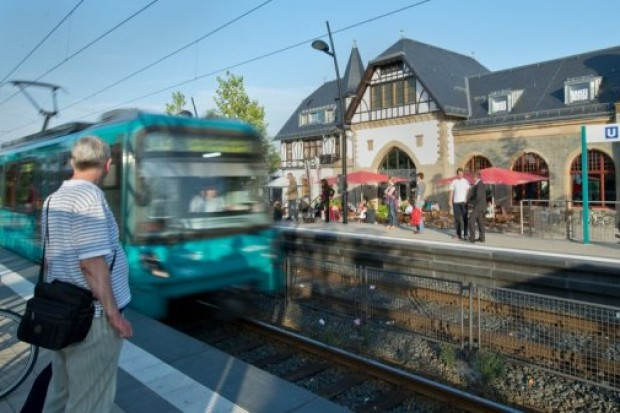
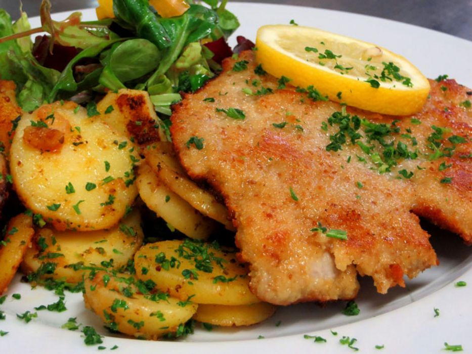

History
The town was first mentioned as "Ursella" in 791 in a deed recording a donation to the monastery Lorsch. In the year 880 the first church in the area, called "monasterium ad ursellam", was mentioned. In 1317 the first trading activities were documented. In 1444 Oberursel was officially sanctioned as a town. Two years later, the town wall was finished. Since the town was growing so fast in the 15th century the town walls had to be expanded in 1481 towards the east. In the early 16th century a school for Latin language was established next to the church.
In 1535 Oberursel become property of Earl Ludwig von Stolberg-Königstein and becomes a Protestant town. 1557 Nicolaus Henricus built the first printing plant in Oberursel. 1605 due to the counter-reformation Oberursel becomes Catholic again. The most important industry in the late Middle Ages and in the early modern times was the clothier business. During the Thirty Years' War the town was destroyed three times, in 1622 and 1645. In 1645 most buildings were destroyed by fire; leaving just the old town hall, bakery, and one apartment house near the marketplace.
Demographics
Oberursel has around 47,000 inhabitants. The town was first mentioned as a settlement "Ursella" in a deed of donation to the monastery of Lorsch in 791 AD. The word stem of the place name indicates a two to three thousand year old age of the settlement. In 1919 Oberursel had 7,999 inhabitants. In 1929 the municipality of Bommersheim was incorporated. During the Second World War, the town was largely spared air raids. In 1972 the municipalities of Oberstedten, Stierstadt and Weißkirchen were incorporated. As a result, the population increased from around 25,000 to around 37,000.
Industry, trade, crafts and commerce developed rapidly after 1945. Banks and insurance companies settled down. Schools were built, settlement areas developed, new traffic routes created. Various leisure facilities were created, large parts of the city forest were declared a local recreation area and thus enjoy special protection. A modern indoor swimming pool can be added to the scenic outdoor swimming pool. Old people's homes and meeting places for young people were built, resulting in growing population.
Cuisine
The cuisine of Germany is made up of many different local or regional cuisines, reflecting the country's federal history. Germany itself is part of a larger cultural region, Central Europe, sharing many traditions with neighboring countries such as Poland and the Czech Republic. Southern regions, like Bavaria and Swabia, share dishes with Austrian and parts of Swiss cuisine. The Michelin Guide of 2015 awarded 11 restaurants in Germany three stars, the highest designation. As of November 2017, Germany had the fourth-highest number of Michelin three-star restaurants in the world, after Japan, France, and the United States.
As part of the province Hesse, there are also some local food traditions. Hessian cuisine is based on centuries-old recipes and forms a major part of the Hesse identity. Reflecting Hesse's central location within Germany, Hessian cuisine fuses north German and south German cuisine, with heavy influence from Bavarian cuisine and Rhenish Hesse. Sour tastes dominate the cuisine, with wines and ciders, sauerkraut and handkäse with onions and vinegar popular.